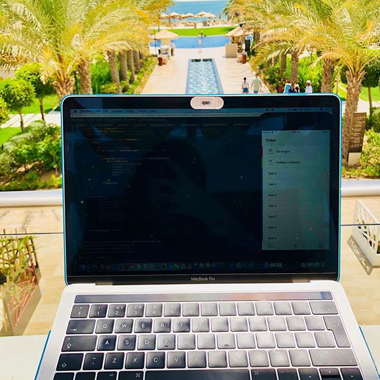

Tania is currently working remotely as a front-end web developer and traveling the world! She was kind enough to interview with me between her travels. Continue reading below for great advice related to working remotely, traveling, and good life tips.

I’m sure a lot of web developers either have or have had the dream of working remotely and traveling the world. Tell us how you made that dream a reality and what made you choose remote work?
I have to admit that I was one of those developers that wanted to be able to work remotely one day, as I’m absolutely crazy about traveling the world and just getting to meet people that come from different cultures and backgrounds. I can honestly say that’s one of my favorite things to do — just pack a bag and go… start exploring.
That being said, my remote opportunity came when my husband and I decided to make a change in our lives and trade rainy London for sunny Dubai for a little while as our permanent HQ.
So while I was preparing to say my goodbyes and fair-wells to my former colleagues that I worked with in London, some of them asked me if I would be willing to work for them remotely at least for a little while and I accepted.
In a way the end of my London chapter merged a bit with the new Dubai chapter making one of my wishes come true along the way.
Was remote work always the end goal for you? Is it something you plan on sticking with long term?
Remote working was never the end goal for me. It was more of a wish in order to have more flexibility to be able to focus more on personal projects, personal development and new traveling adventures.
In the long run, now that I know what working remotely looks like, I don’t think it’s for me. So far it’s been great, can’t really complain, but personally my end goal is to become a CTO and unfortunately I don’t see that happening as fast as I would like it to if I were to stay more then 2–3 years in a remote role.
What pros and cons could you list for being a remote developer? Any tips for those seeking that work style?
Hmmm… like anything else there are always pro and cons.
I think for this particular case the general pro would be your obvious flexibility which basically means that as long as you have an internet connection you can work from anywhere.
Then from my point of view, it’s a pro that you can have a little bit more independence in terms of your work, even though that comes with it’s sibling — full responsibility for your actions/mistakes.
As a tip I would say that I don’t recommend this to people that don’t like to check their emails and answer their slack messages all the time as this kind of role doesn’t have a particular timeframe such as a 9 to 5 does.
You have to be a great communicator! You can’t just turn around to discuss with your colleagues the problems that might occur, therefore everything needs to be crystal clear and on time so you won’t be a blocker for the rest of your teammates.
And last but not least, I want to mention that I was very blessed and lucky to work with people I worked with before, making everything a lot easier, but you have to be aware that even though remote working sounds like a dream, it’s still quite a new concept and some companies out there might not be that comfortable or understanding with the ‘benefits’ that come with it, so make sure you establish some ground rules before jumping into anything.
Where are you currently located and where have you been? What’s your favorite city that you’ve been to so far and why?
Dubai, UAE is my main residence at the moment, but before that London, UK was my main home for about 6 and a half years. Before that, Suceava, Romania was my home for the first 21 years of my life.
In between those 3 cities there were places such as Rome, Venice, Milan, Paris, Brussels, Bruges, Miami, New York, Washington, Barcelona, Belek, Brasov, Sighisoara, the whole Tunis and the list goes on.
To pick a favorite one is so soooo hard. All these places around the world are so beautiful and they all have that ‘je ne sais quoi’ that makes each of them so unique.
I definitely love Venice and I want to go back there one day before it sinks, as you can truly feel the history of the town there.
But it was truly love at first sight with Tunis’s culture and people. About 4 years ago I went there for my birthday and I was ‘warned’ by everyone to be careful as it’s Ramadan and I shouldn’t walk on the street alone and all that nonsense. But it was my first encounter with Ramadan period so I just tried to be as polite as I could, only to find out that the people there are so respectful, nice and peaceful.
Unfortunately I was there also during the Sousse beach shootings. On the same beach line just about 10km further down from where the horrible massacres happened and I like to think that I was protected by the Fatima Hand pendant that I received as a gift from one of the locals a few days before.
The people there are very kind and what mass-media left out is that the locals working at the hotels where the shootings happened, made a human chain to protect the tourists (but I guess with the journalism today that information just falls under details).
If you ever get the chance to visit Tunis I would recommend to do a 2 day trip or more if you can, go to the mystical and magical Sahara Desert, visit a mosque, go to a palm tree plantation in one of the Oasis’s and just make an effort and try to get to know the locals. I can guarantee you will not regret it.
Do you miss out on having that in-person team experience or do tools like video chat and slack fill that gap?
Sometimes I do miss that face-to-face encounter especially when there’s something that on my side works perfectly and I can’t troubleshoot properly on my PM’s machine. For example, to see the problem and then have to go through step-by-step about what’s happening, which sometimes is super fun and other times a bit confusing but slack is a life saver for sure.
Are there any technologies you’d like to learn or work more with?
Aww yes! Every few months/years as new frameworks/languages come up I’m curious to see them work and I have the tendency to try and integrate them into my projects as much as possible.
At the moment I’m very into React Native. Still discovering certain things about it, but I would defiantly love to work more with it as for me personally working on mobile apps feels a lot more natural then working on platforms for some reason.
I even started my own app as a personal project with React Native, that I hope will help users to organize their day and lives better, in a simple and easy way. Just to give you an idea, you will be able to created structured categories where you can plan a holiday, project, track goals, or even add a simple grocery list, all under the same digital roof.
At the moment the V1 of the app is in progress and I do try to work on it as much as possible, but lately my schedule has been quite busy and hectic, so the flight delays sometimes are blessings in disguise.
What do you think you’d be doing if you weren’t a programmer?
Before I became a full time developer and really embraced my inner geek, I was quite involved in politics and I actually studied all the great thinkers such as Socrates, Plato, and Aristotle, as well as all the political tools and regimes, so I think I would have been in the theoretical world of politics, as the politics in the real world is the complete opposite — absolutely disgusting at the moment all over the world and quite disappointing if you ask me.
Name some of your favorite activities that don’t involve staring at a computer screen.
Well that’s a tough one as I’m quite passionate about what I do. I don’t see it as a job so I end up ‘working’ all the time basically.
But I guess the other activities except for traveling would be just reading a good book, but I mean a really good book, a real page turner, catching up with my friends and family is always fun, and recharging and just trying out new things.
What’s next for you?!
If you would have asked me this 5 years ago I would have had a whole business-like plan to take you through all the steps and goals, but about 3 years ago I realized how true this saying is, “Life is what happens to you while you’re busy making other plans”.
So I still have some main goals because that’s how I function best, being a bit of an organization freak and all, but I also learned to go with the flow sometimes, so who knows? Might be in a completely different place this time next year.
Anything else you’d like to add for the people reading this?
Just that life is absolutely beautiful for those that want to see it and be a part of it. Sadly, we are getting so influenced and worked-up by what we see in the media that sometimes we forget to just be human beings and treat each other with kindness and respect.
I guess what I’m trying to say to everyone reading this (and I know what I’m about to say might be a bit cliché), is that no matter what, don’t forget to be kind, don’t forget to treat others the way you want to be treated and don’t be afraid to do what you love, both on the personal and professional side. It might be hard and you might not see the light at the end of the tunnel, but trust me when you get there, it’s so worth it that you would be willing to go through that again a million times.
Hope you all enjoyed reading this, thank you for your time and thank you Terrance for these lovely questions!
To see more of Tania’s adventures give her a follow on Instagram at @codinggirl22. Follow me on all major social medias @terrance_corley for more web developer related content.